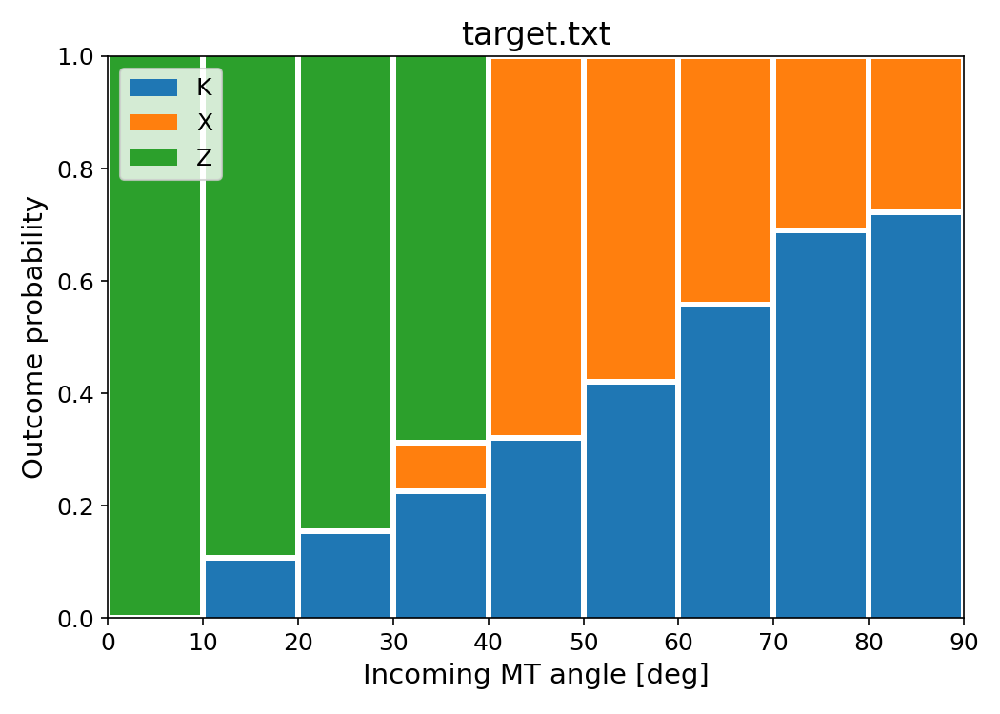

Emergent properties of the cortex.
Unlocking the laws of microtubular dynamics and how to escape them.
Carlos A Lugo - Maude Formanek- Nedelec Group - Sainsbury Laboratory.
Introduction.
The skeleton of the cell, or cytoskeleton, develops by a series of mechano-chemical processes, which can be studied using mathematical descriptions at the microscopic level, for example interactions of molecular motors, polymerisation of filaments and chemical kinetics.
Introduction.
These approaches have shed light on the role of each of the components inolved in shaping the cortex orientation, and they are very useful for describing developmental processes and carrying out evolutionary experiments 'in-silico.'
Introduction.
In the Nedelec group,we carry out research to elucidate the role of several key parameters. For instance, we have studied the role of geometry in the orientation of the cortical microtubule network, as well as the origin of several well known 'laws' for microtubule interactions. We have carried out computational investigations alongside in-vivo experiments.
Cortical dynamics and geometry
Cortical dynamics and geometry

Current investigations.

Our current interest concerns the effects of local geometric imperfections present in the plasma membrane, which may drive cortical network orientation.
Current investigations.
In collaboartion with Ray Wightman, we have confirmed and characterised the prescence of long suspected quasi-periodic irregularities in the plamsa membrane.
Current investigations.
Equipped with these new observations, we are now in the process of furthering our understanding by implementing these boundary forces in Cytosim.
Cell membrane wavelength $\lambda \simeq 40-60 nm$
Implementation of the membrane structure into Cytosim.
We have implemented a module to compute the field of forces over filaments as an optimisation problem.